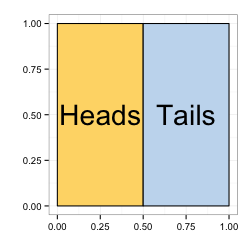

In the statistical inference class, I became curious about Bayes Law in the context of medical testing. I wanted to understand it in a more visual, intuitive way, like the way a 50/50 coin flip can be represented simply as two equal, non-overlapping areas:
 Could the interpretation of a medical test given Prevalence, Specificity, and Sensitivity be represented in the same terms?